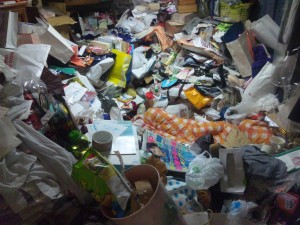

<ons-page>
    <ons-toolbar>
        <div class="left">Lv.8</div>
        <div class="center">しんじん　たかし</div>
    </ons-toolbar>
    <div style="text-align: center">
        <p>今日もおかたづけをしましょう！</p>
        
        <div id="timeline">
        </div>
        <ons-button class="center" ng-click="myNavigator.pushPage('page2.html')">かたづける
        </ons-button>
    </div>
</ons-page>